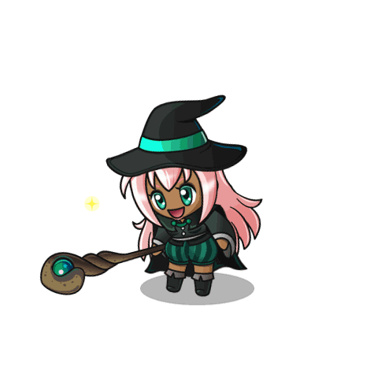

Hipsta e os Misterios da Floresta
hipsta foi escolhida para defender e proteger a floresta e este sempre foi um trabalho traquilo - mas recentemente acontecimentos assustadores mexeram com a tranquilidade de todos
nessa aventura hipsta vai enfrentar perigos que nem imagina para descobrir o que anda tirando o sono dos moradores da floresta e trazer de volta a tranquilidade que sempre pairou por ali
